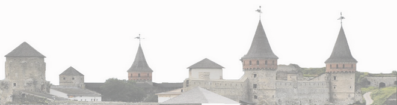

<div class="radug"></div>
	<header class="shap relat"><!--ШАПКА И МЕНЮ -->
		<div class="logo inline">
			<a href="index.html"></a>
		</div>
	    <div class="kult inline bord absolut">
			
		</div><!--
	 --><hr class="pod-zam bord">
		<hr class="pod-zam2 bord">
		<nav>
			<ul class="menu relat">
				<li><a href="index.html">Головна</a>
				<li>Навчання у Польщі
					<ul class="polsh absolut">
						<li><div class="podmenu">Безкоштовна спеціальна освіта</div></li>
						<li><div class="podmenu">Навчання у технікумах</div></li>
						<li><div class="podmenu">Про карту поляка</div></li>
						<li><div class="podmenu">Система вищої освіти в Польщі</div></li>
						<li><div class="podmenu">Що необхідно для вступу?</div></li>
					</ul>
				<li>Навчання у Словачині
					<ul class="slovak absolut">
						<li><div class="podmenu">ВУЗи Словаччини</div></li>
						<li><div class="podmenu">Система вищої освіти Словаччини</div></li>
						<li><div class="podmenu">Умови вступу до ВНЗ Словаччини</div></li>
					</ul>
				<li>Умови вступу
				<li>Вартість вступу
				<li>Вивчення мови
				<li>Медіагалерея
				<li>Часті запитання
			</ul>
		</nav>
	</header><!--ШАПКА И МЕНЮ -->